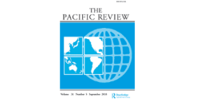

收录于合集

简 介
【 作者 】 XUE GONG ，目前在新加坡南洋理工大学拉贾拉特南国际研究院工作。研究方向为政治经济学、国际关系和外交政策。
【 文章来源 】The Pacific Review, Published online: 14 Nov 2018.
【期刊介绍】 《太平洋评论》（The Pacific Review）主要聚焦亚太地区国家的国内政治决策与国际互动，论文内容涉及国内与国际政治、经济变迁与互动、商业及工业政策、军事政策与文化议题。20 17年该杂志影响因子为1.809，在85家国际关系期刊中排名第23位，在68个区域研究期刊中排名第6位。

【 整理 】 彭小朵
【 审核 】 庞林立
【提纲】
摘要
简介
“一带一路”与中国——东南亚的关系
东盟国家对 “一带一路”的反应
来自其他大国倡议的地缘经济竞争
“一带一路”在东南亚的推进挑战
结论
摘要
“一带一路”倡议自提出以来，引起全球的广泛关注。政治领导人、商界人士，媒体和分析师对“一带一路”倡议的前景呈现出两极分化的态度。一组声称，“一带一路”倡议将大大增加中国的全球影响力，特别是对中国周边国家。另一组人猜测认为，由于难以克服的挑战，“一带一路”倡议将会失败。本文着重探讨“一带一路”倡议对东南亚地区秩序的影响。作者对此持中立立场，认为“一带一路”倡议的实际影响既不容忽视，也不应被高估。通过“一带一路”倡议，中国在东南亚的影响力将会增加，但无法建立以中国为中心的区域势力。作者认为主要原因有三点：一是东盟及其成员国对“一带一路”倡议的反应，二是东南亚其他主要大国提出的替代性基础设施举措的影响，三是中国践行“一带一路”倡议的能力。
简介
最近几年，中国的外交政策发生了重大变化，在领土、海上争端中逐渐采取强硬立场，对全球治理采取了更为积极的态度。作者提出外交政策变化显示出中国越来越有兴趣成为世界领先大国，“一带一路”倡议作为一项实质性政策脱颖而出，国际社会各方人士对于“一带一路”倡议态度不一。 由于“一带一路”首先在中国周边地区实施、中国政府对“一带一路”在东南亚的成功寄予厚望、 东南亚被认为是中国海上丝绸之路的“第一线” ，以及东南亚被中国视为战略性区域， 因而作者在文中探讨了“一带一路”对东南亚地区秩序的影响，并探究在东南亚地区推进“一带一路”的影响因素。
“一带一路”与中国——东南亚的关系
**
**
作者提出在后冷战时代，中国为改善与东南亚的关系作出了巨大的努力，并且加强在该地战略立足点。分析人士认为 中国在东南亚的战略目标有以下六点： 一是与该地区保持稳定、友好的关系；二是使域内国家视中国为积极的合作伙伴；三是与区域国家建立良好的经济关系；四是希望在区域议程制定中发挥主导作用；五是尽力避免一些国家加入或支持针对中国的战略包围圈；六是提升中国形象。
“一带一路”倡议提出后，国际社会反响不一，大量的分析人士思考了“一带一路”对国际和地区秩序的影响。文章提出关于“一带一路”对世界的潜在影响的争论主要有三个派别。第一派别着重关注经济方面，其支持者倾向认为“一带一路”将增强中国的经济影响力，但它与地区政治和安全秩序基本无关。第二派别持“一带一路”几乎不会对地区秩序构成挑战，甚至导致中国“战略透支”的观点。第三派别则分析认为“一带一路”将重塑区域秩序，重新定义中国与邻国的关系。
鉴于上述观点得不到令人信服的证据支持，作者借助现有资料，通过三个关键因素，对“一带一路”在东南亚的前景进行深入分析，分别为：第一，东盟国家对“一带一路”的回应；第二，比较“一带一路”与东南亚其他主要参与者提出的举措；第三，中国国内因素以及限制中国交付能力的困难。
东盟国家对 “一带一路”的反应
对于东盟国家而言，“一带一路”并不是一项全新的举措。中国与东盟国家在过去几十年中进行了广泛的经济合作，并一直致力于许多重大项目。作者认为，尽管中国与东盟国家的经贸合作项目远远领先于“一带一路”，但它们现在被视为“一带一路”的成就。即使没有“一带一路”平台，许多工业和基础设施项目仍然会进行。 在某种 程度上 ， “一带一路” 反映了中国 —东南亚经济 合作 持续性和可能性 的加剧 。
中国强调“一带一路”与《东盟互联互通总体规划2025》（MPAC 2025）之间的协同作用，东盟同样希望借助“一带一路”促进东盟互联互通，补充与支持现有的多边与区域项目，然而东盟同样存在“一带一路”将对其构成潜在挑战的担忧，原因有如下五点：一是东盟担心“一带一路”将会破坏东盟的中心地位和统一性；二是日益增长的贸易不平衡不利于东盟各国，从而担忧国家经济与国家主权的独立性；三是大型基础设施项目投资的经济回报缓慢且风险巨大；四是“一带一路”海上合作将加强中国在争议地区的存在感，例如南海问题；五是东南亚国家与东盟对中国均存在深深的不信任感。
来自其他大国倡议的地缘经济竞争
“ 一带一路 ” 引发东南亚地区其余参与者的地缘经济担忧，纷纷提出自己的 政策平台来吸引东南亚 国家 ，希望 降低 中国的影响力，并帮助 东南亚各国 实现外部经济关系多元化。 自20世纪60年代以来，日本一直通过亚洲开发银行（ADB）实施自己的跨国运输基础设施项目。中国近期对东南亚基础设施的投入强力刺激了日本在该地区的基础设施投资，双方在东南亚的基础设施投资僵局主要集中在高速铁路部门。由于日本与东南亚国家不存在海上冲突，因而日本提出的海上倡议对东南亚国际更具有吸引力。此外，日本试图在加强印度次大陆与湄公河次区域之间的联系与合作方面发挥主导作用。印度虽然不是东南亚地区重要的经济参与者，但根据“东进行动”政策，它与该地区的经济合作进展顺利。印度继续推进改善印度与东南亚互联互通的举措，以便在印度洋地区与中国竞争。此外，“一带一路”下的孟中印缅经济走廊虽然是唯一一个连接东南亚和南亚的经济走廊，但受中印争端、信任赤字等影响，作者认为孟中印缅经济走廊成功的可能性不大。多年来美国始终在东南亚地区保持着优势地位，“一带一路”提出后，美国仍旧保持广泛持久的安全关系、外交互动和商业存在。在区域战略和安全领域，美国通过各领域的双边和多边框架限制中国挑战东南亚地区秩序的各类行动，在软实力领域，美国亦专注于软基础设施，如医疗、人类发展和民间社会建设等。
“一带一路”在东南亚的推进挑战
除贸易外，“一带一路”在东南亚的推进过程中遭遇巨大挑战，主要受到以下问题的影响。 第一，中国内部协调问题。 首先，中国建议与各国建立协调机构以实施“一带一路”， 但由于功能重叠和不明确，这些机构的运作效率不高。其次，尚未建立有效的中央领导机构来协调“一带一路”建设活动，也未能提出统一战略以实施“一带一路”。最后，“一带一路”包括的不同省份之间也存在竞争。 第二，财务挑 战。 国外大量的专家学者质疑“一带一路”资金的可行性与可持续性。中国于2017年5月签署了《一带一路发展融资指导原则》，将私人资本市场纳入其中，但作者认为如果没有切实可靠的回报，很难让非公共部门参与其中。 **第三，相关的东南亚国家民众不信任 “一带一路”。**首先，中国易成为东道国国内政治攻击的目标；其次，中国企业对东南亚当地文化缺乏敏感性；最后，中国企业在国外的不当行为使中国整体国家形象受损。
结论
“一带一路”似乎可能在东南亚再次引发中国经济活动浪潮。由于“一带一路”，预计未来几年中国在该地区的经济存在、中国与东南亚国家之间的贸易将大幅增加。 作者认为 中国 的 区域经济活动 可能将减少中国的 战略 、 政治影响力 。 如果没有“一带一路”，中国仍可以在参与并支持东南亚的大部分基础设施和投资项目。将“一带一路”作为政策接口并以高调的方式进行推广，实际上加强了一些地区与国家对中国的政治和战略警惕，并进一步推动了该地区其他主要大国对中国的战略性平衡。因此作者认为中国推出“一带一路”并将其作为一种政策工具推广时犯了错误。
点击左下角“ 阅读原文 ”获取原文pdf版
声明
此文为国政学人微信公众平台外文编译系列文章之一，由国政学人编辑首发，不代表本平台观点。欢迎转发分享，转载请务必注明来源。如有问题，请联系guozhengxueren@163.com
更多阅读
国政学人 （ID：guozhengxueren)
为方便学人及时阅读高质量文章
别忘把国政学人设置 星标 哦~